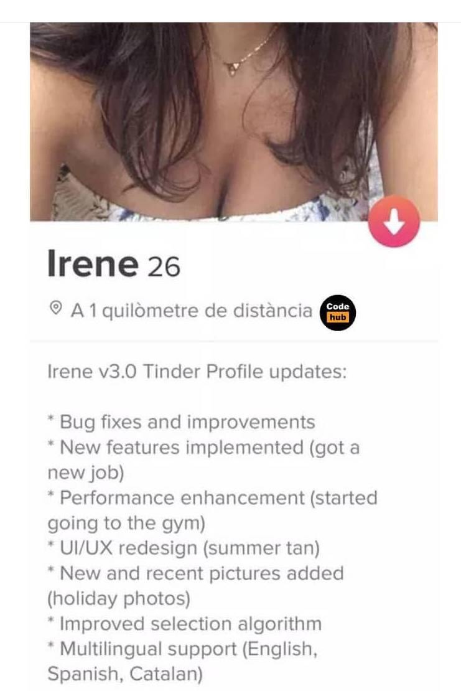

00. Link - Node.js advanced pattern: Dependency Injection Container
01. Link - Is postMessage slow?
02. Link - Functional JavaScript: What are higher-order functions, and why should anyone care?
03. Link - Blazor – WebAssembly na usługach Microsoftu, czyli C# trafi pod strzechy w aplikacjach SPA
04. Link - What's wrong with Promise.allSettled() and Promise.any()
05. Link - Intro Guide to Dockerfile Best Practices
06. Link - Smashtest is a language for rapidly describing and deploying test cases.
07. Link - Faster, cheaper, and better: A story of breaking a monolith
08. Link - The Tragedy of the Common Lisp
09. Link - Things I Learnt The Hard Way (in 30 Years of Software Development)
10. Link - The Tao Of Programming
